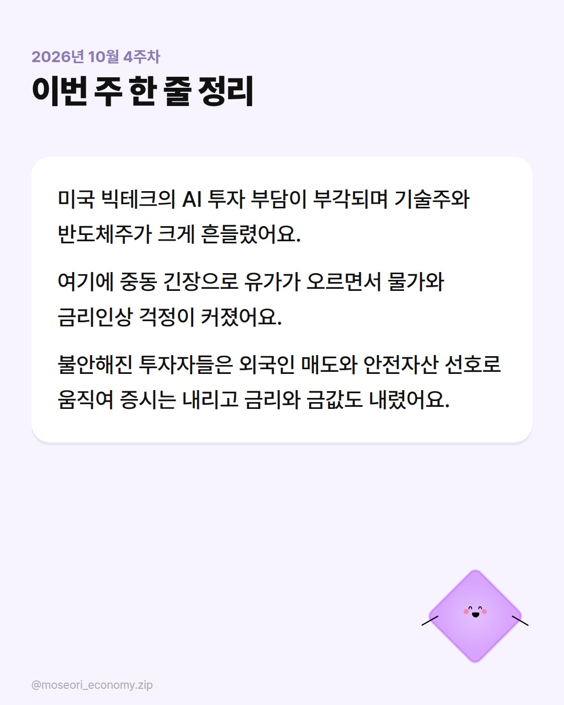

네이버 블로그 초안 · 2026년 10월 4주차
1. 네이버 블로그 글쓰기를 열어요.
2. 위에서부터 칸마다 [복사] → 스마트에디터에 붙여넣기를 해요.
3. 📷 칸(맨 위 표지, 맨 아래 정리)에는 [내려받기]한 이미지를 올려요.
4. 소제목 칸은 붙여넣은 뒤 '소제목' 서식으로 바꿔요.
5. 태그를 넣고 발행해요.
2026년 10월 4주차 경제지표 정리｜AI 투자 불안에 흔들린 증시

사진 설명: 2026년 10월 4주차 주간 경제지표 표지
(시험용 예시 — 기사 제목과 카드 내용만으로 썼어요. 실제 루틴은 기사 본문까지 읽고 더 자세히 써요.) 이번 주는 미국 빅테크의 AI 투자 부담이 시장 전체를 흔든 한 주였어요. 섹터별로 무슨 일이 있었고 어떤 기사가 중요했는지 정리했어요.
금리｜이번 주 금리 기대를 바꾼 건 정책보다 시장의 불안이었어요
정리
이번 주는 한국은행이나 연준의 통화정책 관련 뚜렷한 발언·결정 기사를 확인하지 못했어요. 대신 유가 상승으로 미국 금리인상 걱정이 다시 나온 점은 다음 주에도 지켜볼 만해요.
채권｜주식이 흔들리자 돈이 국채로 몰려 한·미 금리가 함께 내렸어요
채권 한눈에 보기 (지난주 마지막 거래일 대비 이번 주 마지막 거래일. 금리는 %p, 나머지는 %.)
| 지표 | 지난주 | 이번주 | 변화 |
|---|---|---|---|
| 국고채 3년 | 3.854% | 3.803% | ▼ 0.05%p |
| 국고채 10년 | 4.182% | 4.097% | ▼ 0.08%p |
| 미국채 2년 | 4.82% | 4.81% | ▼ 0.01%p |
| 미국채 10년 | 5.19% | 5.13% | ▼ 0.06%p |
이번 주 흐름
- 10/22(수) 미국에서 AI 투자 불안이 커지며 미국채 10년물 금리가 크게 내렸어요.
- 10/23(목) 미국채 강세를 따라 국고채 금리도 일제히 내렸어요.
주요 기사
[뉴스핌] [채권/외환] AI 투자 불안에 美 국채 금리 급락…10년물 5% 아래로
AI 투자 불안으로 위험자산을 줄이려는 수요가 커지면서 미국 국채로 돈이 몰렸어요. 국채값이 오르면서 10년물 금리가 5% 아래로 내려왔어요.
👉 이번 주 채권 시장 방향을 정한 출발점이 미국 국채였어요.
[스페셜타임스] 미 국채 강세에 23일 국고채 금리 일제히 하락
미국 국채가 강세를 보이자 다음 날 국내 국고채 금리도 만기와 상관없이 함께 내렸어요.
👉 한국 채권 금리가 미국을 얼마나 바로 따라가는지 보여 줘요.
정리
국채는 정부가 발행한 빚 문서예요. 불안할 때 사람들이 국채를 사면 값이 오르고 금리는 내려가요. 이번 주 금리 하락은 경기 좋은 신호라기보다 불안의 신호였어요.
환율｜외국인이 주식을 팔아도 원화가 강했던 건 수출 달러 덕분이었어요
환율 한눈에 보기 (지난주 마지막 거래일 대비 이번 주 마지막 거래일. 금리는 %p, 나머지는 %.)
| 지표 | 지난주 | 이번주 | 변화 |
|---|---|---|---|
| 원/달러 | 1,334.7원 | 1,323.5원 | ▼ 0.84% |
| 원/100엔 | 844.6원 | 843.9원 | ▼ 0.08% |
| 원/유로 | 1,500.0원 | 1,482.7원 | ▼ 1.16% |
| 원/위안 | 199.46원 | 198.23원 | ▼ 0.62% |
이번 주 흐름
- 10/21(화) 외국인이 주식을 팔았지만 수출기업이 번 달러를 원화로 바꾸면서 환율이 내렸어요.
- 10/23(목) 외국인의 1조 원 규모 매도에 환율이 6거래일 만에 잠깐 반등했어요.
주요 기사
[파이낸셜뉴스] 외국인 주식 파는데 환율은 하락? 수출기업 달러 매도 영향
보통 외국인이 주식을 팔면 달러 수요가 늘어 환율이 오르는데, 이번엔 반도체 수출기업의 달러 매도가 더 컸어요.
👉 이번 주 원화 강세의 핵심 이유를 설명해 줘요.
[뉴스1] 외국인 1조 '팔자' 달러·원 6거래일 만에 반등…1324.6원(종합)
외국인의 대규모 주식 매도로 환율이 하루 반등했지만 한 주 전체로는 내림세가 유지됐어요.
👉 하루 움직임과 한 주 흐름이 다를 수 있다는 걸 보여 줘요.
정리
환율이 내렸다는 건 원화 값이 올랐다는 뜻이에요. 해외여행이나 수입 물가에는 도움이 되지만, 외국인 매도가 계속되면 방향이 바뀔 수 있어요.
주식｜메타의 신주 발행이 AI 투자 과잉 걱정에 불을 붙였어요
주식 한눈에 보기 (지난주 마지막 거래일 대비 이번 주 마지막 거래일. 금리는 %p, 나머지는 %.)
| 지표 | 지난주 | 이번주 | 변화 |
|---|---|---|---|
| 코스피 | 5,668.05 | 5,550.30 | ▼ 2.08% |
| 코스닥 | 794.78 | 751.69 | ▼ 5.42% |
| 다우 | 52,002 | 52,215 | ▲ 0.41% |
| 나스닥 | 26,140 | 25,955 | ▼ 0.71% |
| S&P500 | 7,659 | 7,624 | ▼ 0.47% |
이번 주 흐름
- 10/20(월) 외국인과 기관이 함께 팔면서 코스닥이 3% 넘게 급락했어요.
- 10/22(수) AI 투자 과잉 우려가 다시 커지며 뉴욕에서 나스닥이 2.6% 내렸어요.
주요 기사
[머니투데이] 또 고개 든 AI 투자 과잉론…나스닥 2.6% 하락[뉴욕마감]
빅테크가 AI에 쓰는 돈이 너무 많다는 걱정이 다시 나오면서 기술주 중심으로 크게 내렸어요.
👉 이번 주 한·미 증시 하락의 공통 원인이에요.
[서울신문] 코스닥 3.33% 급락 781.97… 외국인·기관 동반 매도
주 초부터 외국인과 기관이 함께 팔며 코스닥이 크게 밀렸어요.
👉 한국 증시가 주 초부터 약했다는 걸 보여 줘요.
정리
신주 발행은 회사가 새 주식을 찍어 돈을 모으는 거예요. 기존 주주 몫이 줄어 보통 악재로 받아들여져요. 다음 주 빅테크 실적이 이 걱정을 키울지 줄일지가 관건이에요.
금｜유가가 오르자 이자 없는 금의 매력이 줄었어요
금 한눈에 보기 (지난주 마지막 거래일 대비 이번 주 마지막 거래일. 금리는 %p, 나머지는 %.)
| 지표 | 지난주 | 이번주 | 변화 |
|---|---|---|---|
| 국제 금(온스) | $4,181 | $4,008 | ▼ 4.14% |
이번 주 흐름
- 10/20(월) 유가 급등으로 미국 금리인상 걱정이 커지며 금값이 내렸어요.
주요 기사
[글로벌이코노믹] 국제 금값 하락…유가 급등에 美 금리 인상 우려 재부각
유가가 오르면 물가가 오르고, 그러면 금리가 오를 수 있다는 걱정이 커져 금값이 내렸어요.
👉 유가·금리·금값이 어떻게 이어지는지 보여 줘요.
정리
금은 이자가 없어서 금리가 오를 것 같으면 매력이 줄어요. 불안한 장에서도 금값이 내린 건 금리 걱정이 더 컸다는 뜻이에요.
원자재·달러｜중동 긴장이 유가를 밀어 올려 물가 걱정을 다시 키웠어요
원자재·달러 한눈에 보기 (지난주 마지막 거래일 대비 이번 주 마지막 거래일. 금리는 %p, 나머지는 %.)
| 지표 | 지난주 | 이번주 | 변화 |
|---|---|---|---|
| WTI(배럴) | $101.41 | $103.27 | ▲ 1.83% |
| 무역가중 달러지수 | 121.60 | 121.40 | ▼ 0.16% |
정리
중동 긴장으로 유가가 올랐어요. 유가는 주유비와 물가에 바로 이어지는 만큼 다음 주에도 눈여겨볼 만해요. (시험용 예시라 기사 연결은 생략했어요.)


사진 설명: 2026년 10월 4주차 한 주 정리 카드
이번 주 카드뉴스는 인스타그램에서도 볼 수 있어요.
https://www.instagram.com/p/De4j6nXkdZ4/
함께 참고한 기사
- [채권/외환] AI 투자 불안에 美 국채 금리 급락…10년물 5% 아래로 - 뉴스핌
- 미 국채 강세에 23일 국고채 금리 일제히 하락 - 스페셜타임스
- 외국인 주식 파는데 환율은 하락? 수출기업 달러 매도 영향 - 파이낸셜뉴스
- 외국인 1조 '팔자' 달러·원 6거래일 만에 반등…1324.6원(종합) - 뉴스1
- 또 고개 든 AI 투자 과잉론…나스닥 2.6% 하락[뉴욕마감] - 머니투데이
- 뉴욕증시, AI 투자 부담 우려에 기술주 급락…나스닥 2.60% 하락 - 미디어파인
- 코스닥 3.33% 급락 781.97… 외국인·기관 동반 매도 - 서울신문
- 국제 금값 하락…유가 급등에 美 금리 인상 우려 재부각 - 글로벌이코노믹
#모서리경제 #주간경제 #경제지표 #AI투자 #나스닥 #코스닥 #환율 #국채금리 #금값 #유가